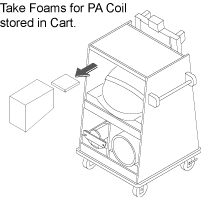

- 00000018WIA30EDBF20GYZ
- id_131059951.3
- Jul 6, 2019 12:17:31 AM
MCR III Tool for Optima MR360 / Brivo MR355
Prerequisites
| Required persons | Preliminary requirements | Procedure | Finalization |
|---|---|---|---|
| 1 | Not Applicable | 60 minutes | Not Applicable |
| Item | Quantity | Effectivity | Part number | Manufacturer |
|---|---|---|---|---|
| SV MCR III Tool 1.5T | 1 | - |
5759367 | - |
| ||||
| Condition | Reference | Effectivity |
|---|---|---|
|
System software is loaded and the system is capable of making images. | - | - |
|
The MCR tool helps isolate failures within the MCR chain. In order to rule out potential failures with the system cabinet or the 8-channel switch, it is recommended that you begin by running the Mega Switch diag and the syscab loopback test diag prior to running the MCR tool. | - | - |
About this task
Overview
The Multicoil Receive Chain Tool provides a means of diagnosing problems in Multicoil Receive (MCR) chain hardware, without use of coils. The tool sends signals down the individual paths to isolate specific channels in the receive chain. The tool’s Graphical User Interface (GUI) guides the user through the various steps involved in running the tool and troubleshooting the problem. The GUI has built-in instructions and detailed setup instructions, troubleshooting flowcharts and documents that will help facilitate rapid diagnosis of the problem. There are two levels of tests that can be run using the MCR III tool: Default and Individual. Once you've decided to use MCR III tool, determine which level of test your situation requires. The default and port-specific levels of tests offer increased user-friendly automation that is been omitted from the individual tests by design. Therefore, it is imperative to identify which level of tests you need to perform and then follow the instructions for that specific level.
-
Port A Default Tests
-
This test must be passed during the MR installation.
-
In most scenarios, this is the first test that should be run when using the MCR tool.
-
If this test fails, individual tests can be run to further isolate the failing component.
-
-
Port A Individual Tests
-
These tests are designed to run after the default test indicates a failure.
-
-
Uno Coil Test For Fixed Table
-
This test must be passed during the MR installation.
-
MCR III tool for Optima MR360 and Brivo MR355 consist of following two Tests. For Detachable Table, perform Port A Default Test during Installation. For Fixed Table, perform both Port A Default Test and express PA Coil Test during Installation.
-
MCR III Port A Test: MCR III Port A Test
-
MCR III Express PA Coil Test for Fixed Table: MCR III Express PA Coil Test for Fixed Table
MCR III Port A Test
Hardware setup
Procedure
- Port A's path travels through the hypertronics port, cable path,
and the preamps within the Multi-coil Interface Box before going to
the Mega-switch.
Figure 1. MCR III Port A Testing 
- Move the platform so the LPCA port are accessible.
Figure 2. LPCA Hypertronics Ports 
RUN MCR test
Procedure
- Select the Port A and then click Run. This test includes the following two tests.
- With preamps OFF (Port A).
- With preamps ON (Port A).
Note:The Default tests will automatically run all the individual Port A tests.
The individual tests are primarily designed to allow field engineers to hammer a specific portion of the MCR chain.
Figure 5. Port A Test 
- If the MCR tool reports a failure (designated by red text in
the results, for example,Figure 6), see MCR III Chain Tool Troubleshooting for troubleshooting.
Figure 6. Failed Test 
MCR III Express PA Coil Test for Fixed Table
Hardware Setup
Procedure
- Remove 3 Port A’s connectors from MCR3 Tool.
Figure 7. Disconnect 3 Connectors from MCR3 tool 
- Move the cradle inside the bore until free from the side guards.
Release the cradle from the LPCA.
Figure 9. Release the cradle 
- Lift the cradle at the handle by 1 hand and use the other hand
to insert the foam.
Figure 10. insert the foam  Note:
Note:Foam is stored in Cart during Installation.
Figure 11. Foam Location 
RUN MCR test
Procedure
- Select the express PA Coil-Cradle and
then click Run.
Figure 18. express PA Coil Test Figure 19. Passed Result